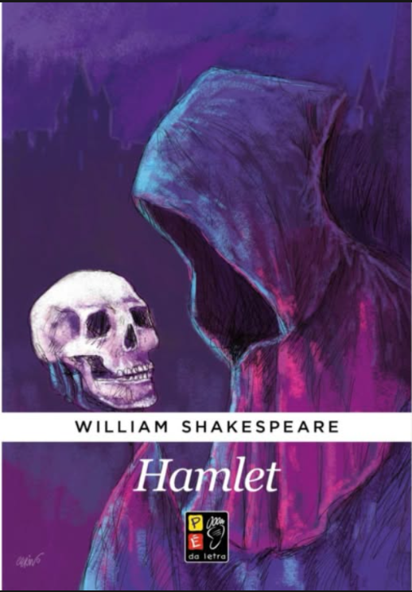
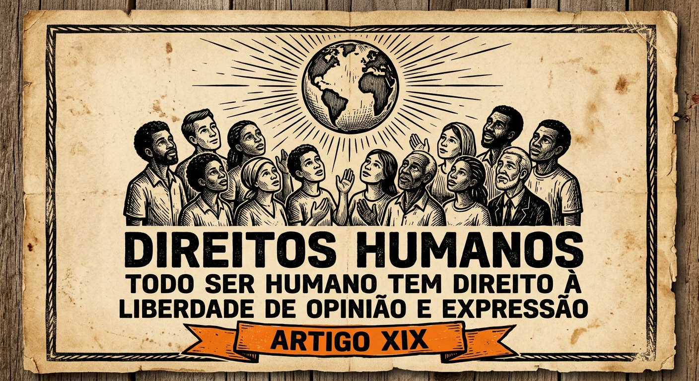
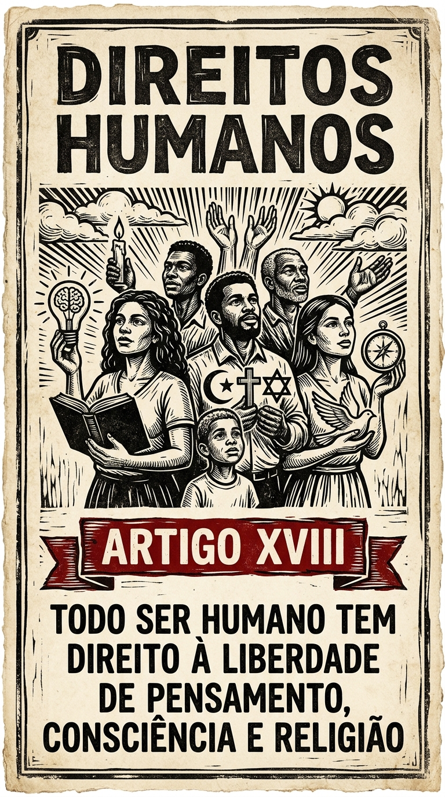
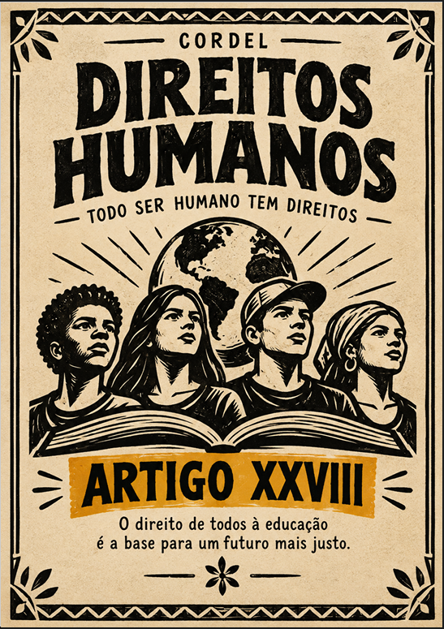

TRABALHO 01 · Conto de terror e suspense
Os retalhos de uma alma quebrada
Uma narrativa sombria marcada por memórias, culpa, aparições e o mistério do Espreitador.
Ler trabalho completo →Leituras, ideias e produções escolares
Um espaço que reúne as produções desenvolvidas ao longo das aulas de Língua Portuguesa. Explore contos, resenhas, cordéis, poemas, apresentações e outras atividades realizadas individualmente ou em grupo.
Uma narrativa sombria marcada por memórias, culpa, aparições e o mistério do Espreitador.
Ler trabalho completo →
Uma narrativa pela perspectiva de Jaja, marcada pela pressão familiar e pelo medo de decepcionar o pai.
Ler trabalho completo →Uma narrativa pela perspectiva de Eugene Achike, que confronta sua própria rigidez, os danos causados à família e a possibilidade de recomeçar.
Ler trabalho completo →
Uma narrativa sobre Eugene Achike, a exaustão, a perda da família e um encontro inesperado com Tyler.
Ler trabalho completo →
Uma resenha sobre mistério, investigação, autoria e as reviravoltas do livro de David Foenkinos.
Ler trabalho completo →
Uma avaliação pessoal da tragédia de William Shakespeare, com resumo e trechos marcantes.
Ler trabalho completo →
Uma reflexão sobre a Segunda Guerra Mundial, a perseguição aos judeus e a importância de aprender com a história.
Ler trabalho completo →
Uma resenha sobre o livro de Junji Miyaura, com reflexões sobre autoconhecimento, espiritualidade e contato com a natureza.
Ler trabalho completo →
Versos sobre liberdade de expressão, respeito, informação e responsabilidade no uso da própria voz.
Ler trabalho completo →
Poema sobre liberdade religiosa, perseguição e o respeito à crença de cada pessoa.
Ler trabalho completo →
Versos inspirados no princípio de que todos os seres humanos nascem livres e iguais em dignidade e direitos.
Ler trabalho completo →
Um cordel bem-humorado que acompanha uma sequência de desventuras e termina com uma surpresa.
Ler trabalho completo →
Uma investigação sobre a indústria cinematográfica brasileira, os filmes que marcaram sua história, o reconhecimento internacional e os desafios enfrentados pelo cinema nacional.
Ler trabalho completo →Nenhum trabalho foi encontrado. Tente pesquisar por outro título ou palavra.
Este acervo reúne as produções publicadas no Caderno de Letras. Novos trabalhos poderão ser adicionados futuramente.